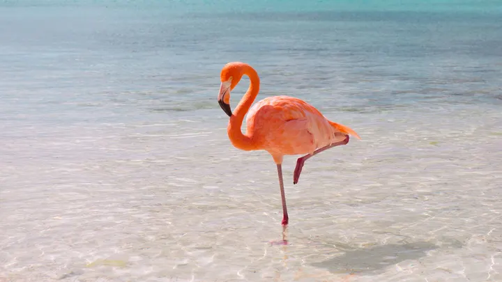
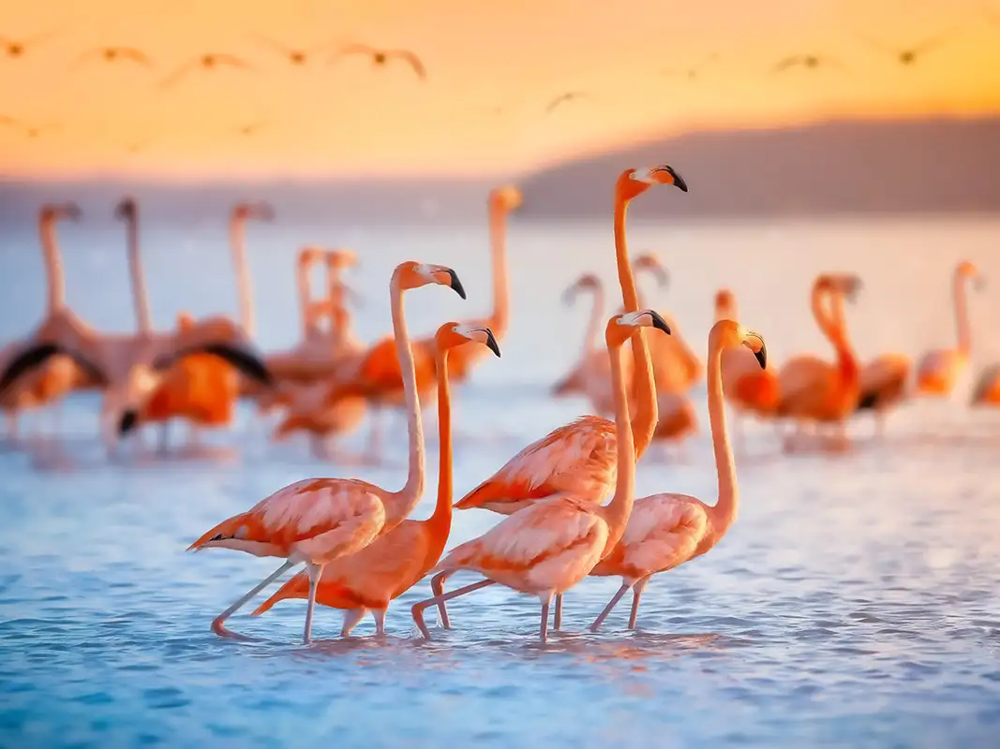
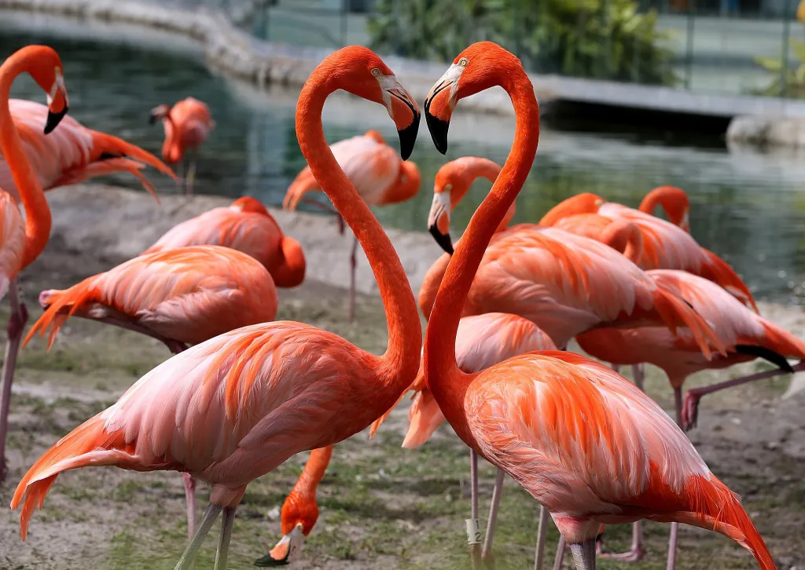

Here are flamingos

Flamingos
A single flamingo in water.

Flamingos
Flamingos enjoying the sunset.

Flamingos
Flamingo romance.

Flamingos
Typical standing position of flamingos.
Flamingos are large wading birds known for their striking pink feathers, long legs, and unique, curved beaks. They
belong to the family Phoenicopteridae and are found in various parts of the world, including the Americas, Africa,
Asia, and Europe. These birds typically inhabit shallow lakes, lagoons, mangrove swamps, and sandy islands, where
they form large colonies that can number in the thousands. Flamingos are highly social creatures, engaging in
synchronized group behaviors such as feeding, flying, and even nesting.
The diet of flamingos primarily consists of algae, diatoms, and small aquatic invertebrates such as shrimp. Their specialized beaks are adapted to filter-feeding, allowing them to separate mud and silt from their food. The pink coloration of flamingos is a result of the carotenoid pigments in their diet, particularly from the algae and crustaceans they consume. The intensity of their color can vary based on the amount and type of food they eat, with well-fed flamingos appearing more vibrant and colorful.
Flamingos are also known for their distinctive courtship displays, which include synchronized dancing, head-flagging, and wing-saluting. These displays are performed in groups and play a crucial role in mate selection. Once paired, flamingo couples build nest mounds out of mud, where the female lays a single egg. Both parents take turns incubating the egg and, after hatching, feeding the chick with a nutrient-rich substance known as "crop milk." This strong parental involvement continues until the chick is mature enough to join the colony's creche, a group of young flamingos cared for collectively by the adults.
The diet of flamingos primarily consists of algae, diatoms, and small aquatic invertebrates such as shrimp. Their specialized beaks are adapted to filter-feeding, allowing them to separate mud and silt from their food. The pink coloration of flamingos is a result of the carotenoid pigments in their diet, particularly from the algae and crustaceans they consume. The intensity of their color can vary based on the amount and type of food they eat, with well-fed flamingos appearing more vibrant and colorful.
Flamingos are also known for their distinctive courtship displays, which include synchronized dancing, head-flagging, and wing-saluting. These displays are performed in groups and play a crucial role in mate selection. Once paired, flamingo couples build nest mounds out of mud, where the female lays a single egg. Both parents take turns incubating the egg and, after hatching, feeding the chick with a nutrient-rich substance known as "crop milk." This strong parental involvement continues until the chick is mature enough to join the colony's creche, a group of young flamingos cared for collectively by the adults.
Fun facts about flamingos
SCIENTIFIC CLASSIFICATION
| Category | Description |
|---|---|
| Name | Canis familiaris |
| Family | Candidae |
| Order | Carnivora |
| Class | Mammalia |
FLAMINGO DANCE